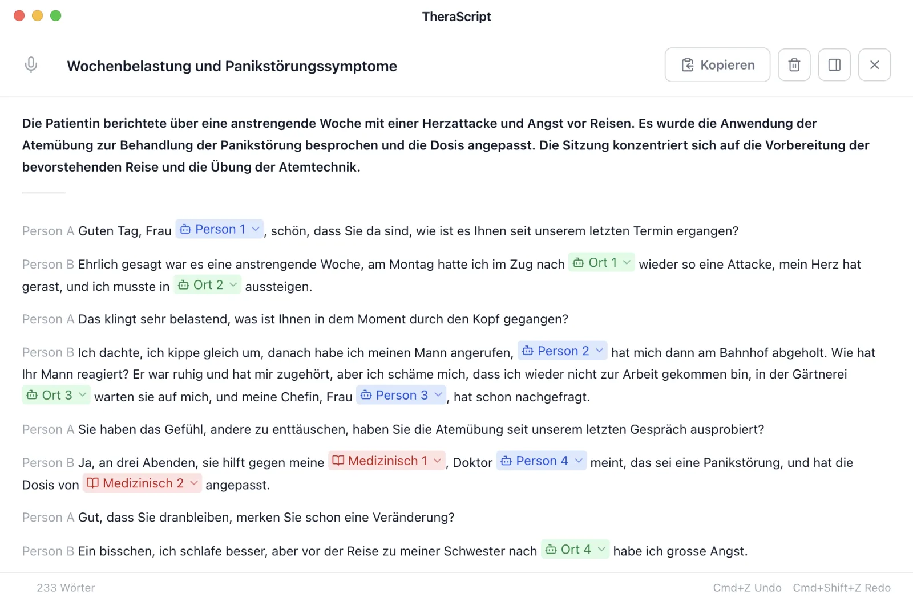
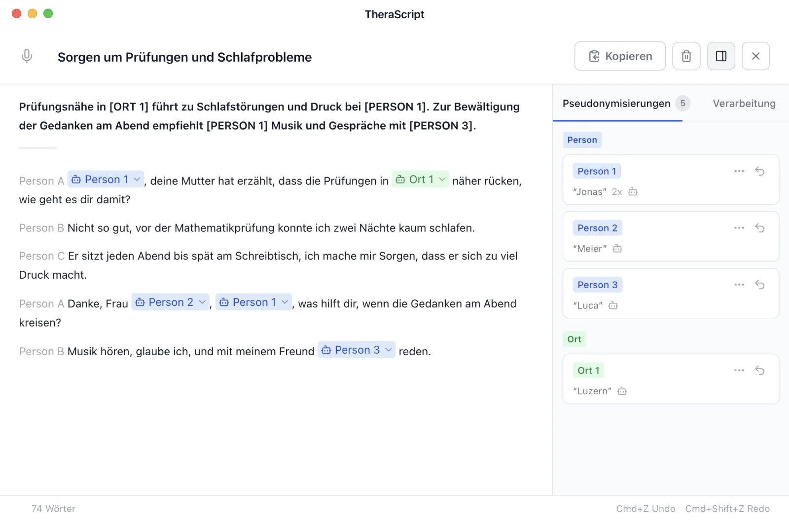
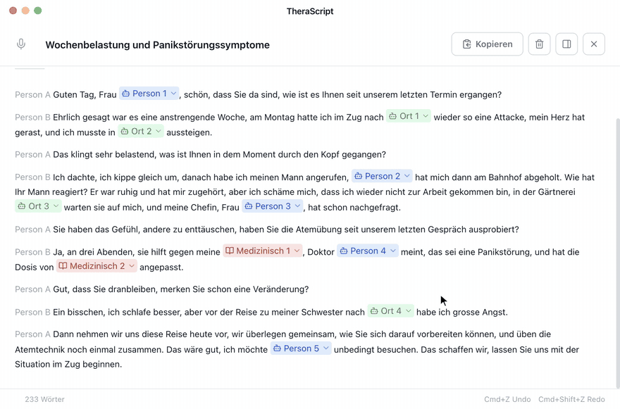
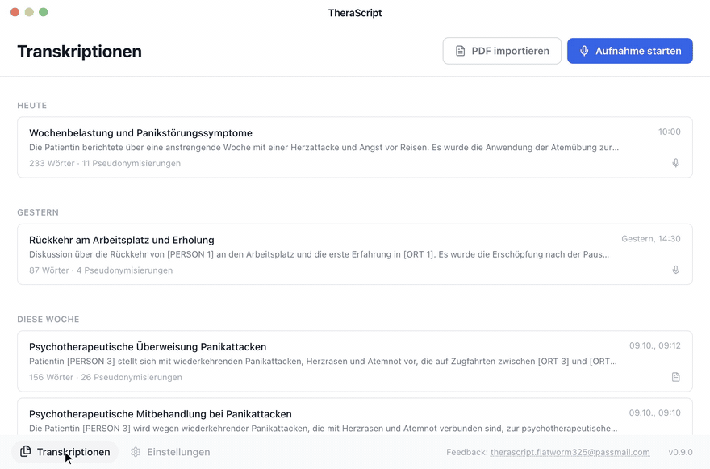
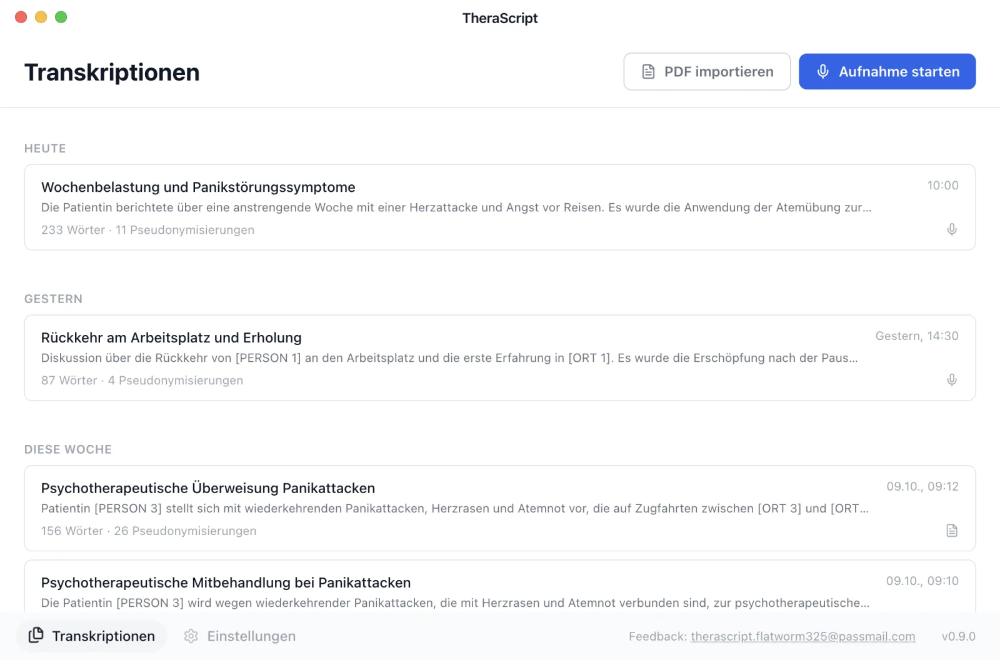

Daten bleiben auf Ihrem Mac
Aufnahme, Transkription, Pseudonymisierung und Zusammenfassung laufen auf Ihrem Mac. TheraScript übermittelt keine Inhalte aus Ihren Sitzungen. Keine Cloud, kein Online-Konto, keine Telemetrie.
TheraScript schreibt Ihre Therapie-Sitzungen mit und ersetzt Namen und persönliche Angaben durch Platzhalter – direkt auf Ihrem Mac.
Für Mac mit Apple-Chip (M1 oder neuer), macOS 26 (Tahoe) oder neuer

Aufnahme, Transkription, Pseudonymisierung und Zusammenfassung laufen auf Ihrem Mac. TheraScript übermittelt keine Inhalte aus Ihren Sitzungen. Keine Cloud, kein Online-Konto, keine Telemetrie.
Statt während der Sitzung mitzuschreiben oder danach abzutippen, erhalten Sie ein fertiges Transkript – nach Gesprächspartner:innen getrennt und bereits pseudonymisiert. Sie prüfen und übernehmen, was Sie brauchen.
Keine Bezahlversion, kein Abo, keine In-App-Käufe. Der Quellcode ist unter der MIT-Lizenz öffentlich auf GitHub einsehbar und lässt sich unabhängig überprüfen.
In wenigen Minuten installiert.
Kein Abo, keine In-App-Käufe – laden Sie TheraScript herunter und legen Sie los.
Ein Klick auf «Aufnahme starten» genügt. Der Mikrofon-Pegel ist sichtbar, und Sie können während der Aufnahme in TheraScript weiterarbeiten. Nach zwei Stunden stoppt die Aufnahme automatisch. Danach entsteht das Transkript ohne Ihr Zutun.

TheraScript erkennt, wer spricht, und kennzeichnet jeden Redebeitrag mit Person A, Person B und einer Zeitmarke. Hochdeutsch wird sehr gut transkribiert, Schweizerdeutsch ordentlich – gelegentliche Korrekturen sind nötig.

Namen, Orte und Kontaktangaben wie Telefon-, E-Mail- oder AHV-Nummern ersetzt TheraScript automatisch durch Platzhalter, ebenso geschriebene Daten wie 12.03.2026. Diagnosen und eigene Begriffe nehmen Sie direkt aus dem Text heraus in die Sperrliste auf. Sie werden dann in dieser und allen künftigen Sitzungen ersetzt. Eine Seitenleiste listet alle Pseudonymisierungen der Sitzung auf.

Berichte und Briefe ziehen Sie als PDF in TheraScript oder wählen sie über «PDF importieren». Auch gescannte Dokumente liest TheraScript mit der Texterkennung von macOS. Der Text wird wie ein Transkript pseudonymisiert.

Optional fasst TheraScript jede Sitzung und jedes Dokument mit einem Titel und zwei Sätzen zusammen – lokal und auf Grundlage des pseudonymisierten Texts. Dafür laden Sie in den Einstellungen unter «Modelle» einmalig ein zusätzliches Sprachmodell herunter. Alle Sitzungen sehen Sie in der Übersicht «Transkriptionen».

Die Installation dauert wenige Minuten. Beim ersten Start zeigt macOS eine Warnung – das ist erwartet.
Die Datei Therascript.dmg öffnen und das TheraScript-Symbol auf den
Ordner «Programme» ziehen.
macOS meldet, dass es TheraScript nicht überprüfen konnte. Auf «Fertig» klicken, nicht auf «In den Papierkorb legen».
In den Systemeinstellungen unter «Datenschutz & Sicherheit» auf «Dennoch öffnen» klicken. TheraScript startet und lädt einmalig die Sprachmodelle herunter.
Die automatische Pseudonymisierung erkennt nicht jede persönliche Angabe, und Diagnosen ersetzt sie nur über die Sperrliste. Auch eine Zusammenfassung kann Fehler enthalten. Prüfen Sie Pseudonymisierung und Zusammenfassung, bevor Sie Inhalte weiterverwenden.
Eine Aufnahme setzt die Einwilligung aller Gesprächsbeteiligten voraus – oder ihrer gesetzlichen Vertretung. TheraScript erinnert Sie während der Aufnahme daran.
Sitzungen werden 30 Tage nach Erstellung automatisch gelöscht, die Aufnahme oder das PDF bereits 24 Stunden nach der Verarbeitung. Was Sie aufbewahren müssen, kopieren Sie vorher in Ihre Praxis-Software oder Ihre Dokumentation.
Mit dem Internet verbindet sich TheraScript nur, um Sprachmodelle und neue Versionen herunterzuladen und nach neuen Versionen zu suchen. Dabei sehen die Anbieter Cloudflare und GitHub Ihre IP-Adresse, den Zeitpunkt und die abgerufene Datei – keine Inhalte aus Ihren Sitzungen. Mehr dazu
Bei jedem Start prüft TheraScript, ob FileVault aktiviert ist – Apples Festplattenverschlüsselung. Falls nicht, erscheint ein Hinweis.
Im Transkript werden echte Namen durch Platzhalter wie [PERSON 1] oder [ORT 1] ersetzt. Die Zuordnung zwischen Platzhalter und Original bleibt lokal auf Ihrem Mac gespeichert – im Editor sehen Sie jederzeit, wer mit [PERSON 1] gemeint ist. Kopierter Text enthält nur die Platzhalter.
Sämtliche Audio-, Transkript- und PDF-Daten werden ausschliesslich lokal auf Ihrem Mac
gespeichert (Standardpfad: ~/.therascript/). TheraScript übermittelt keine
Inhalte aus Ihren Sitzungen – sie verlassen Ihren Mac nur, wenn Sie sie selbst kopieren.
TheraScript verbindet sich nur in drei Fällen mit dem Internet:
Modelle und Versionsliste liegen beim Dienst Cloudflare, neue Versionen bei GitHub. Beide sehen dabei Ihre IP-Adresse, den Zeitpunkt und die abgerufene Datei. TheraScript sendet kein Konto, keine Kennung und keine Nutzungsdaten mit. Aufnahmen, Transkripte, PDFs und Zusammenfassungen übermittelt TheraScript nie. Links zu GitHub oder Hugging Face öffnen sich in Ihrem Browser, nur wenn Sie sie anklicken.
Nach der Ersteinrichtung funktioniert TheraScript auch ohne Internet. Einzelheiten stehen in der Datenschutzerklärung.
Im Review-Editor kopiert der Knopf «Kopieren» den pseudonymisierten Text in die Zwischenablage. Von dort übernehmen Sie ihn in Ihre Praxis-Software oder Ihre Dokumentation, bevor die Sitzung nach 30 Tagen automatisch gelöscht wird.
Nein. TheraScript erkennt Namen, Orte, Kontaktangaben und Daten im Format 12.03.2026 automatisch, übersieht aber gelegentlich eine Angabe. Ausgesprochene Daten wie «am zwölften März» erkennt es nicht. Diagnosen, Institutionen und eigene Begriffe ersetzt TheraScript, sobald sie auf der Sperrliste stehen. Prüfen Sie deshalb jedes Transkript, bevor Sie es weiterverwenden – fehlende Angaben pseudonymisieren Sie mit wenigen Klicks im Editor.
Für die Transkription kommt standardmässig Whisper Large V3 Turbo zum Einsatz – ein multilinguales Modell, das Hochdeutsch sehr gut versteht. Optional lässt sich ein auf Hochdeutsch spezialisiertes Modell aktivieren. Die Gesprächspartner:innen unterscheidet ein Modell von pyannote, für die Pseudonymisierung wird ein deutsches Erkennungsmodell von flair verwendet. Die optionale Zusammenfassung erstellt ein Sprachmodell aus Googles Gemma-Familie. Alle Modelle laufen lokal.
TheraScript läuft auf Macs mit Apple-Chip (M1 oder neuer) ab macOS 26 (Tahoe). Ältere macOS-Versionen werden in der aktuellen Version nicht unterstützt, weil die mitgelieferte Metal-GPU-Bibliothek für die Spracherkennung gegen das macOS-26-SDK gebaut wurde. Wir arbeiten daran, die Untergrenze in einer kommenden Version zu senken. Für Intel-Macs gibt es keine Version von TheraScript.
Nein. TheraScript ist vollständig kostenlos und Open Source unter der MIT-Lizenz. Es gibt keine Bezahl-Version, keine In-App-Käufe und kein Abo-Modell.
Ja. Der vollständige Quellcode ist unter github.com/adbstyle/therascripter einsehbar und kann unabhängig überprüft, kompiliert oder angepasst werden. Die Lizenzen der mitgelieferten Drittsoftware und der Modelle finden Sie in der Lizenzübersicht.
TheraScript aktualisiert sich selbst: Neue Versionen und neue Fassungen der Sprachmodelle werden im Hintergrund geladen und gemeinsam mit einem einzigen Neustart installiert, wenn Sie 10 Minuten nicht am Mac arbeiten oder TheraScript beenden – nie während einer Aufnahme oder Verarbeitung. Unter Einstellungen → Updates installieren Sie ein bereitliegendes Update sofort oder schalten die automatischen Updates aus; verschieben lässt sich ein Update, überspringen nicht. Ältere Versionen ohne diese Einstellung aktualisieren Sie einmalig von Hand, wie in der Installationsanleitung beschrieben. Ihre Transkriptionen, Einstellungen und Modelle bleiben erhalten.
Bereit für weniger Tipparbeit?
Die Anleitung führt Sie Schritt für Schritt durch die Installation.